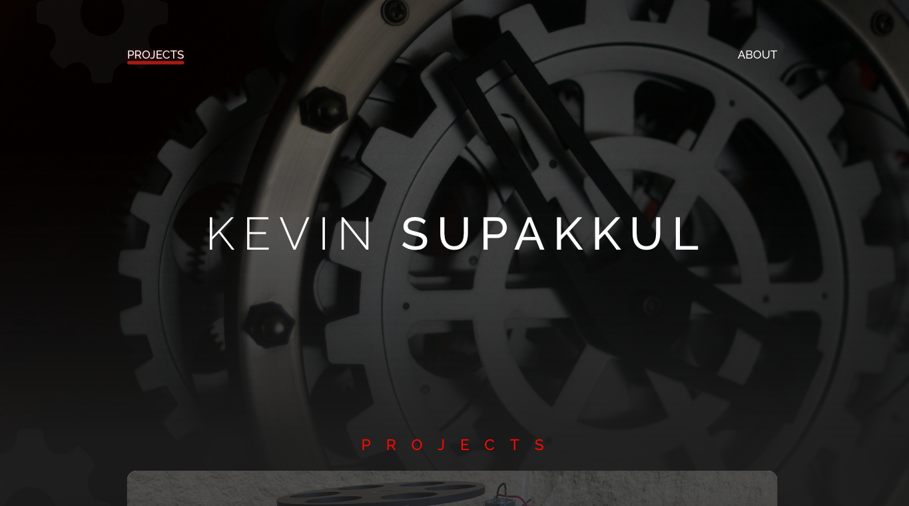
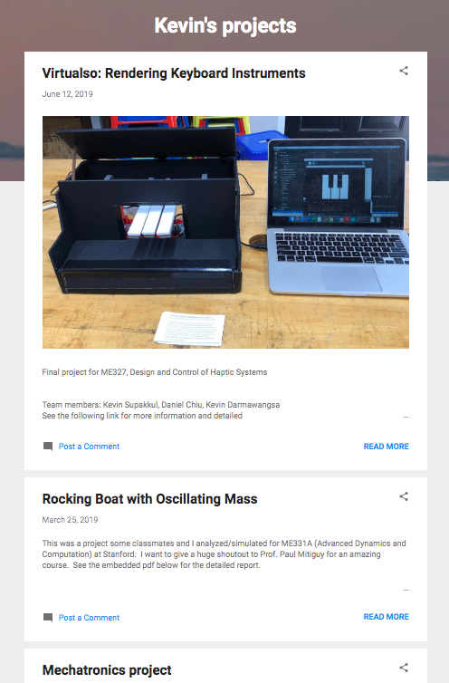
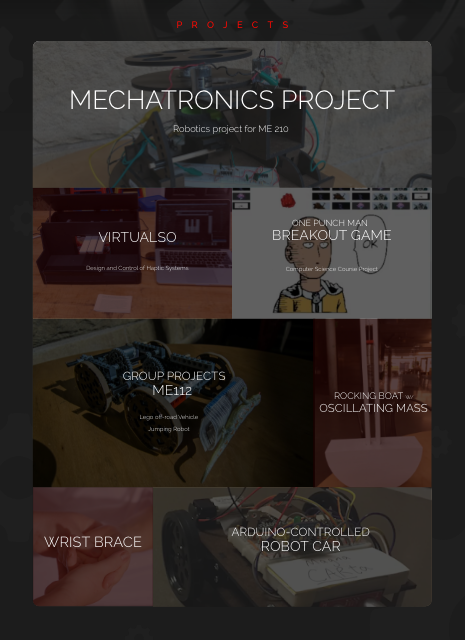

Redesigning to better personalize and showcase notable work.
I took on the task of redesigning Kevin Supakkul’s mechanical engineering portfolio. Kevin wanted a platform on which he could display his projects and share them with potential employers and recruiters for engineering companies. He had been using a free blogging website as a means of compiling his work and voiced to me that, functionality-wise, the site met his needs, but aesthetically-wise, he and I both agreed there was room for improvement.
Since this portfolio was something that would be shared with professionals, Kevin and I decided we should go for a classy, sophisticated feel. With this in mind, I went with an overall dark grey color and Raleway font. I also wanted to use a background image with dark overlay to give off the classiness we wanted. For the image, I settled on a gear-faced watch-- the gears represent a typical piece of hardware associated with mechanical engineering and the watch represents Kevin’s appreciation for them.
I began by ideating and making low-fidelity sketches in my notebook and mid-fidelity mock-ups using Adobe XD. I then moved on to creating a high-fidelity prototype in Adobe XD.
For the previous design, I found it difficult to navigate and see Kevin’s projects because of the blog-post style layout. Because of this, I opted for a clickable block to display pictures and titles of the projects. I also envisioned using CSS to overlay a short description of the project over the image as the user’s mouse hovers on top of the project’s section.


The 'About' page was not only void of information, but also had a layout that was difficult to apply to a career-type profile. I redesigned the page in a way that would showcase Kevin’s skills, background, and contact information so his information would be easily accessible by recruiters.
From this project, I learned that often times, less is more. I experimented a lot with the homepage (project page), always trying to add more because I felt as if something was missing. In the end, I deleted a lot of “fluff”, changed a few color tones and gradients here and there, and the design I was most pleased with ended up being the simplest one. As one of my first design projects, I learned a lot from this and, of course, have much room for improvement. With more time and experience, one thing I would really like to improve on is the layout for the project write-up pages and I would like to experiment with more professional and cleaner layouts for them.